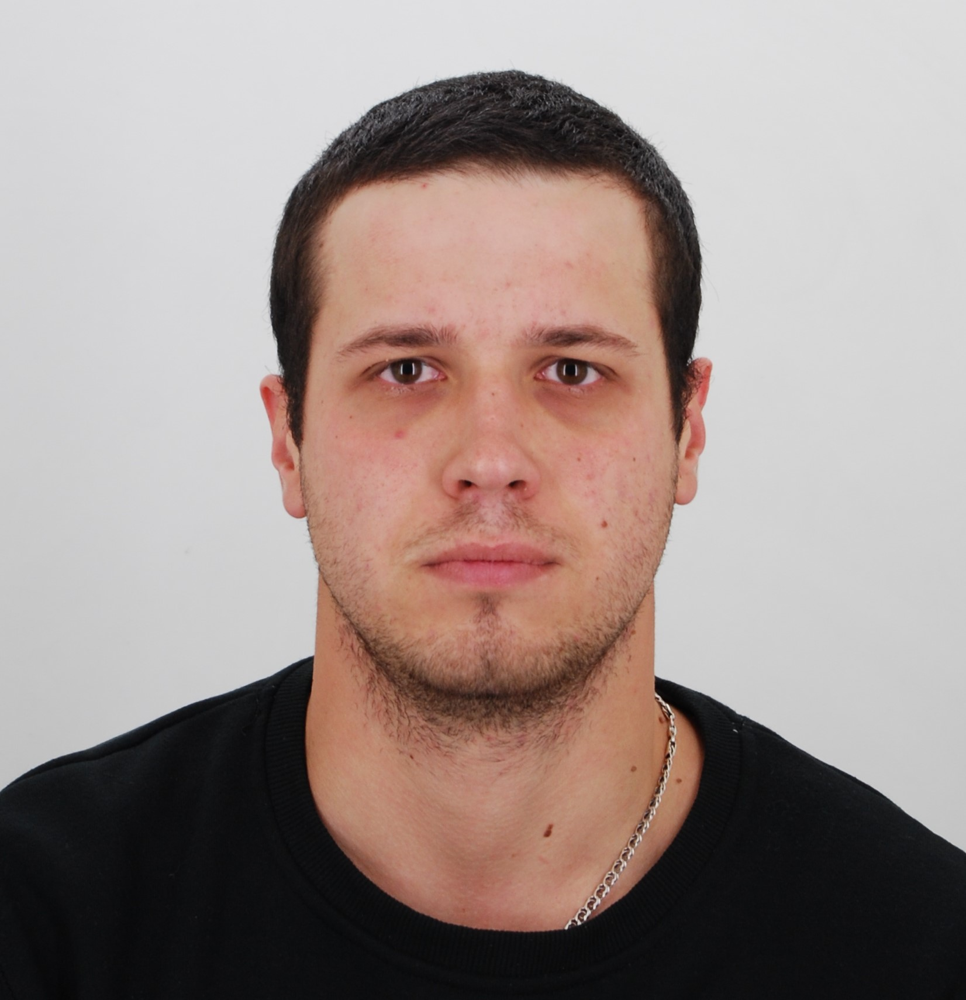

MY FIRST WEBSITE (ENG)

Petriv Mykhailo Volodymyrovych
Personal data:
- Date of birth - 05.11.1994;
- Place of residence - Ivano-Frankivsk;
- Adress - Hetmana Mazepy street 27a;
- Mobile Phone - +380502813576;
- Email - mishapetriv@yahoo.com.
Education:
- Lviv Polytechnic National University:
Master's degree 2016 - "Industrial and civil engineering";
- Ivano-Frankivsk National Technical University of Oil and Gas:
Master's degree 2021 - "Automation and computer-integrated technologies".
Experience:
- 2017-2019 - Construction Company "MGK-Express-24", position - foreman;
- 2019-2021 - DP VO "Karpaty", position - civil engineer;
- 2021-2022 - Construction Company "Blago Development", position - foreman.
Knowledge of languages:
- English - Upper intermediate Level B2/B1;
- German - Intermediate Level;
- French - Beginner Level.
Computer Skills:
- Free User: Microsoft Office Packet (Word, Excel, Power Point),
Adobe Reader(PDF);
- Programs related to Civil Engineer: Autocad, Archicad(Autodesk),
AVK-5, PC Lyra, MathCad, FEMAP.
Personal Qualities:
- Persistance;
- Purposefullness;
- Confidence;
- Decensy;
- Honesty;
- Fairness;
- Organization;
- Responsibility;
- Punctuality;
- Ability to make considered decisions.
Interests:
- Play and watch football;
- Listen to music;
- Do exercises (sport), go for a run;
- Drive a car;
- Relax outdoors, walk in the mountains;
- Skiing;
- Learn, grow, develop and move in the right direction.
Social networks:
1. Facebook account
2. Instagram account
3. LinkedIn account